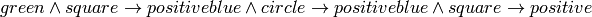
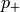
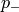
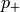
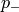
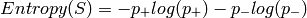
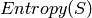

10 - Decision Tree Learning¶
A decision tree is a hierarchical data structure that represents data by implementing a divide an conquer strategy. It can be used as a non-parametric classification and regression method. Given a collection of examples, we can learn a decision tree which represents those samples, and then use this representation to classify the new examples.
The Representation¶
Nodes in the tree are tests for feature values, where there will be one branch available for each possible value of the feature.
Leaves specify the categories and cat categorise instances into multiple disjoint categories.
Boolean Decision Trees¶
A decision tree can represent any boolean function, and can be rewritten as rules in Disjunctive Normal Form (DNF):

The disjunction of these rules is then equivalent to the decision tree.
Decision Boundaries¶
Usually, instances are represented as attribute-value pairs. Numerical values can be used either by discretising of by using thresholds for splitting nodes.
Picking the Root Attribute¶
The goal is to have the resulting decision tree as small as possible (Occam’s Razor). Finding the minimal decision tree consistent with the data is NP-hard.
The recursive algorithm is a greedy heuristic search for a simple tree, but cannot guarantee optimality.
The main decision in the algorithm is the selection of the next attribute to condition on.
...
Entropy¶
If  is a sample of training examples,  is the proportion of positive examples in , and  is the proporion of negative examples in .
is a sample of training examples,  is the proportion of positive examples in , and  is the proporion of negative examples in .
Entropy measures the impurity of :

The  is the number of expected bits needed to encode the class of randomly drawn members of (under the optimal, shortest length code).
Information Gain¶
For any brach you can calculate the information gain.
If you are splitting on an attribute first, work out the entropy for that attribute. Then for determine the entropy for each of the branches. The information gain is then:
The entropy of the attribute minus (for each branch - called a subset) the of the probability of going down that branch multiplied by the entropy of that branch.
The resulting value is the information gained by splitting on this attribute.